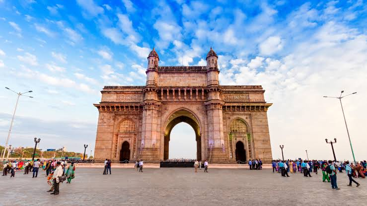
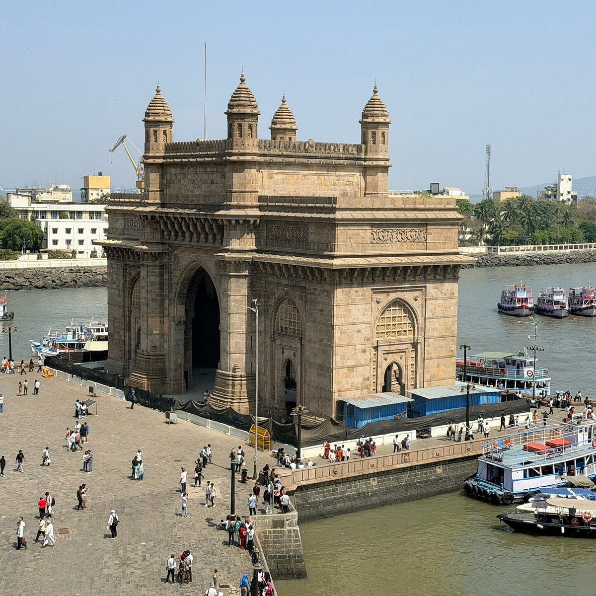
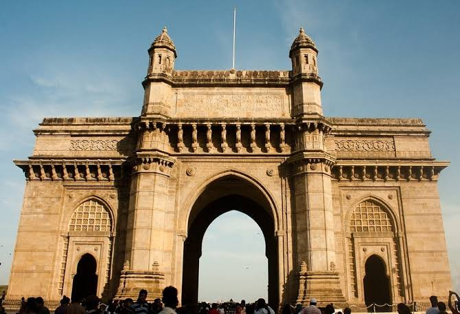

STYLE
Indo-Saracenic
A blend of Hindu and Muslim traditions, Gujarati motifs and Western triumphal arch design.

HERITAGE / 01
Where Mumbai's waterfront meets a changing chapter of Indian history.
SCROLL TO EXPLORE
01 / A LANDMARK OF MUMBAI
Standing beside the Arabian Sea, the Gateway of India has become one of Mumbai's most recognisable historic landmarks.
Its architecture reflects a meeting of different traditions, while its history connects the monument to the changing story of colonial India and independence.
02 / ARCHITECTURE
STYLE
A blend of Hindu and Muslim traditions, Gujarati motifs and Western triumphal arch design.
MATERIAL
Built using yellow basalt stone and reinforced concrete, giving the monument its distinctive appearance.
STRUCTURE
The central arch rises approximately 26 metres and is surrounded by four turrets and a grand central dome.
03 / HISTORY
The Gateway's meaning changed with the history of India, from a symbol of colonial power to a reminder of independence.
COLONIAL ERA
The Gateway served as a ceremonial landing point for important British officials arriving in India.
INDEPENDENCE
With India's independence, the meaning of the monument began to change from imperial symbol to historic landmark.
28 FEBRUARY 1948
The Somerset Light Infantry was associated with the departure of British troops from India through the Gateway.
A TURNING POINT
On 28 February 1948, the Somerset Light Infantry was associated with the final departure of British troops through the Gateway of India.
05 / VISUAL RECORD



CONTINUE EXPLORING
← BACK TO HERITAGE